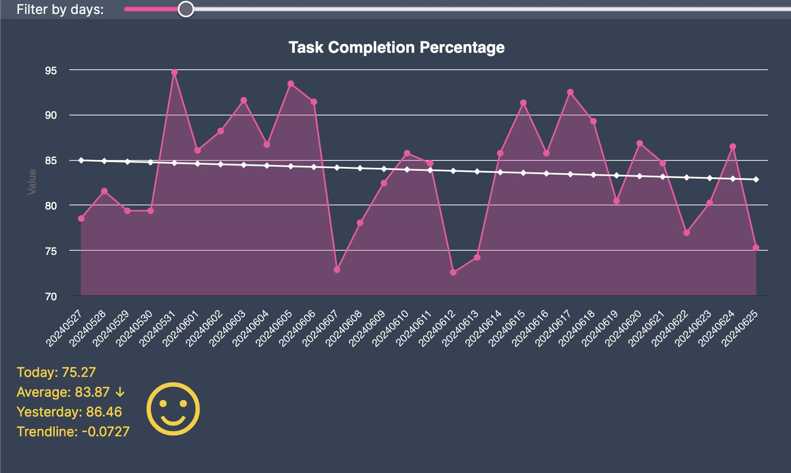
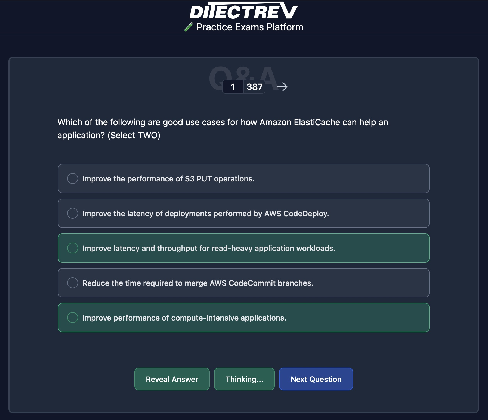
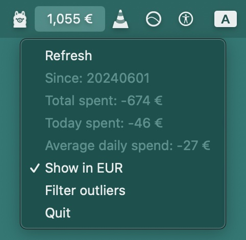
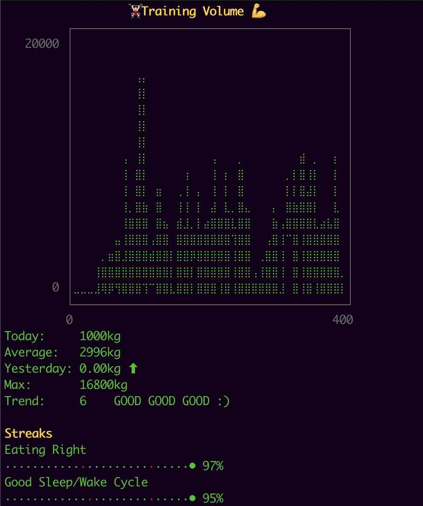
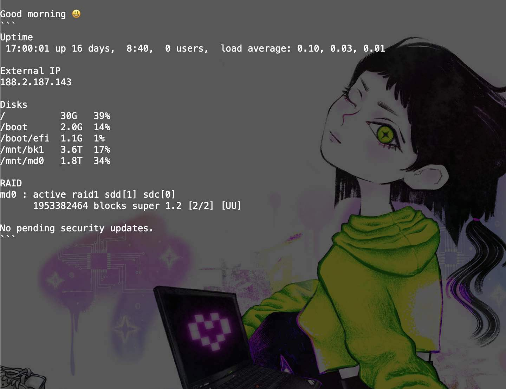
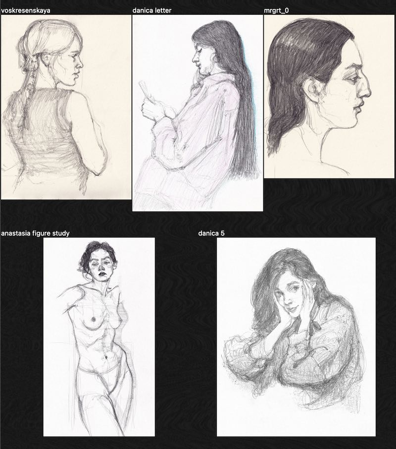

Personal Projects and Experiments
Various projects meant to make life easier with automation and data analysis.
Some open-source, some closed-source, most for fun.
exo-js

- Graphical frontend for for my
plot.rbproductivity tracker. - Graphing and data visualization.
- Tech used:
TypeScript, React, NextJS, ChartJS, Ruby, Sinatra
Ditectrev Education Platform contributions

- Contributed an AI feature that provides explanations for exam questions and answers on the open-source Ditectrev Education Platform.
- Press release
- Tech used:
TypeScript, React, NextJS, Ollama, AI/LLM prompting
fintra.py

- Personal finance tracking app that parses bank CSV exports and provides insight into spending.
- MacOS menu bar integration
- Outlier detection
- Currency conversion
- Tech used:
Python, pandas
plot.rb

- Exocortex that houses a personal archive of notes
- CLI interface with graphing ability
- Tracks habits, mood, work time, exercise volume, etc.
- Daily diary automation
- AI/LLM interface for analyzing the data store
- Tech used:
Ruby, Ollama, AI/LLM prompting
kicomp.xyz

- Personal home server running on a spare parts Linux machine
- Git server
- RAID storage
- Automated daily backups
- Automated reporting
- Dedicated Telegram bot
- DDNS
- Tech used:
Linux, Bash, Python
emil-graphics-bots
- Bots that share art on X (Twitter) and Telegram
- Tech used:
Python, Twitter and Telegram API
emil.graphics

- Personal art archive
- Tech used:
JavaScript, React, NextJS